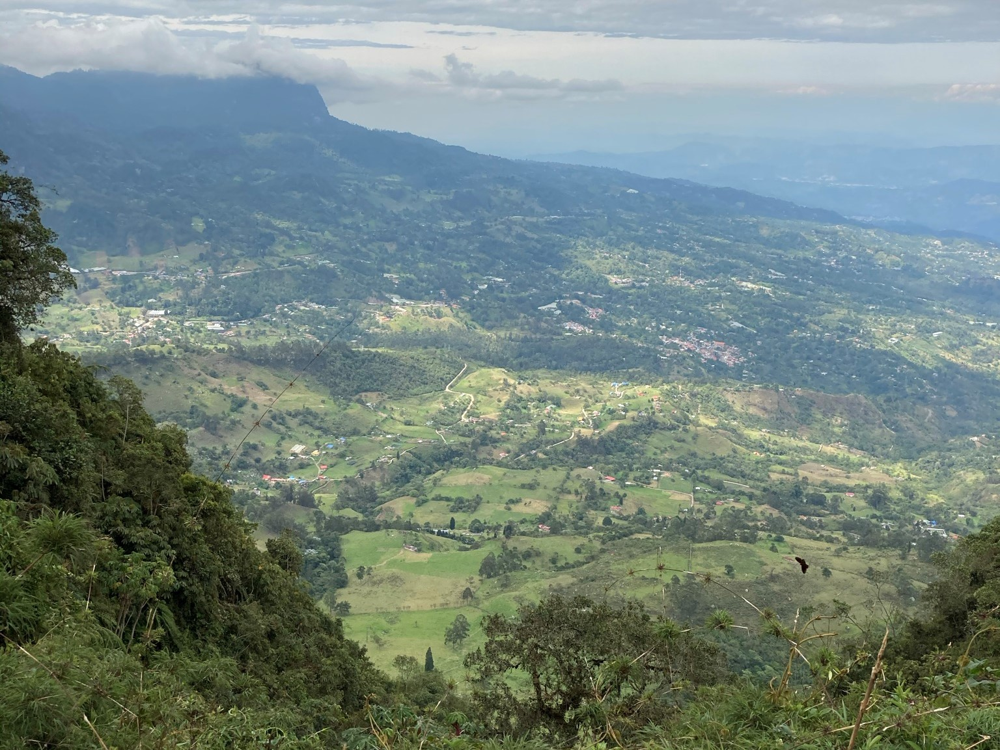

Parque Natural Chichaque, ecoturismo mágico
Fecha del viaje: 17-10-2020
Para llegar a este hermoso lugar debemos ir hasta Soacha, municipio aledaño a Bogotá, puedes llegar en carro, saliendo por la autopista sur, o puedes llegar a Soacha en transmilenio y tomar un bus que dice (indumil, bocamonte), en la última parada del bus que pasa por una vía un poco averiada durante unos 10 minutos, llega al paradero, iniciamos a caminar unos 800 m, para llegar a la entrada del parque natural, después de cruzar la entrada está el parqueadero, el cual es libre, y un restaurante llamado Arboloco, ahi puedes comprar las entradas, el valor de esta no es costoso, aproximadamente $ 5.00 USD, o COP $17.000, en este lugar es bueno verificar todos nuestros implementos, los que siempre se llevan a una caminata, agua y alimentos que te den energía.

Antes de continuar debes pasar por unos torniquetes o control de paso, esto con el fin de contabilizar la cantidad de gente que se encuentra en el parque natural, apenas cruzas esta parte empiezas a ver lo maravilloso y mágico que es el parque Chicaque, justo al momento de entrar y pasar los torniquetes al costado izquierdo se puede ver el corregimiento de San Antonio del Tequendama, con una vista espectacular, una especie de valle con un clima delicioso, este no es frío ya que a medida que uno avanza y se interna en el parque empieza a bajar de altitud, por lo que se vuelve un clima templado y muy agradable para caminar y disfrutar de la naturaleza, ya empezando a bajar la colina, se puede uno encontrar con varias especies de pájaros y escuchar sus cantos, algo que de verdad relaja la mente, el cuerpo y el alma.
A medida de que uno se adentra en el bosque de robles con más de 300 hectáreas va viendo la inmensidad y biodiversidad que tiene el parque, este tiene varios caminos para recorrer; están los de piedra que son los que utilizaron y formaron los antiguos habitantes de San Antonio del Tequendama y los nuevos hechos por las personas que actualmente cuidan y preservan la naturaleza y biodiversidad del parque, hay algunas vías para carros y personas que te llevan al refugio central, un lugar en medio de esta inmensidad de árboles animales mamíferos, vegetación, aves y paisajes, si quieres recorrer todo el parque en 1 dia no es fácil, debes hacerlo mínimo en 3 dias, porque su tamaño es grande, como tiene diferentes vías cada persona puede escogerlos sin temor a perderse pues estos están muy bien demarcados y señalizados. Una de las cosas más bonitas es el Pico del Águila más o menos a 1 hora de la entrada del parque, allí se puede ver aves y una piedra en la punta de la montaña que deja ver el paisaje total del tequendama es simplemente espectacular.
Después de subir al Pico del Águila, puede uno dirigirse a diferentes lugares dentro del parque, está el bosque de mariposas un lugar donde en temporada de mariposas de marzo a junio, donde se encontrará la famosa mariposa de alas de cristal, una magia de la naturaleza!!, luego se puede seguir bajando hasta la laguna o puedes tomar camino al refugio, allí hay restaurantes, hotel, y toda la gama de servicios que ofrece el parque, se pueden hacer diversas actividades como cabalgata, camping, glamping, y claro está el senderismo que lo podemos hacer con el ingreso al parque natural, si quieres puedes continuar, o puedes salir, para volver otro día y conocer el resto del parque; después del refugio central del parque chicaque, camina 1 hora más adentro del bosque y se encuentra la cascada un lugar donde el agua limpia recorre por la montaña y salta a la pequeña quebrada, en la tarde se forma la niebla pequeñas cantidades de agua (humedad) que en la mañana fueron calentadas por el sol y subiendo a la parte alta del bosque en forma de vapor, revela otro nuevo tono a la naturaleza; un bosque de niebla que te hará sentir en otro mundo.
El regreso a la entrada es subiendo a los 2000m a 2700m de altura, es una subida un poco fuerte, un senderismo de alto nivel, por lo que debemos tener un buen estado fisico y si no, puedes entrar y caminar suavemente para no tener inconvenientes más arriba de regreso, tienes que entrar con toda la actitud si te sientes un poco sin aire, te relajas respiras profundo, esto ayuda mucho porque la vegetación por medio de la fotosíntesis que genera oxígeno al medio el cual deja que te recuperes rápidamente y al final disfrutas de todo el camino con tus amigos o familiares.
Tipyagers
- En el parque puedes almorzar en el refugio si no llevas algo para comer.
- Si vas a entrar al parque debes entrar con agua se recomienda 1 litro para caminar y 1 litro para subir a la entrada
- Se recomienda llevar barra de chocolate, maní y bocadillo, para la caminata de regreso, ya que estos alimentos dan energía suficiente para continuar con el recorrido.
- No se paga parqueadero.